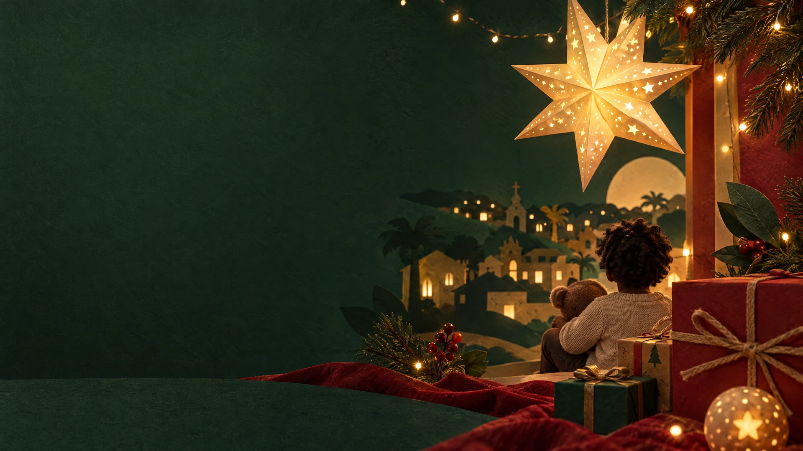

Uma mochila pronta
Materiais para começar o próximo ciclo com curiosidade e confiança.
Saiba maisApadrinhamento que cria raízes
A Natalia aproxima crianças e adolescentes de uma rede de padrinhos, educadores e vizinhos que escolhem cuidar o ano inteiro.

A Natalia nasceu da certeza de que nenhuma criança deveria atravessar a infância sem uma rede para chamar de sua. O apadrinhamento aqui não é sobre salvar: é sobre construir junto, com escuta, respeito e constância.
Conheça a nossa históriaPequenos gestos, grandes continuidades
Materiais para começar o próximo ciclo com curiosidade e confiança.
Saiba maisCeias e encontros que transformam alimento em pertencimento.
Saiba maisTempo, escuta e vínculo para além das datas especiais.
Saiba maisUm convite para este Natal
Escolha uma forma de estar presente e venha construir uma rede onde toda criança possa crescer acompanhada.
Fale com a Natalia